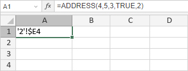

ADDRESS funkcija
Funkcija ADDRESS je jedna od funkcija za pretragu i reference. Koristi se za vraćanje tekstualnog prikaza adrese ćelije.
Sintaksa
ADDRESS(row_num, column_num, [abs_num], [a1], [sheet_text])
Funkcija ADDRESS ima sledeće argumente:
| Argument | Opis |
|---|---|
| row_num | Broj reda koji se koristi u adresi ćelije. |
| column_num | Broj kolone koji se koristi u adresi ćelije. |
| abs_num | Tip reference. Moguće vrednosti su navedene u tabeli ispod. |
| a1 | Opciona logička vrednost: TRUE ili FALSE. Ako je postavljena na TRUE ili je izostavljena, funkcija će vratiti referencu u A1 formatu. Ako je postavljena na FALSE, funkcija će vratiti referencu u R1C1 formatu. |
| sheet_text | Naziv radnog lista koji se koristi u adresi ćelije. Ovo je opciona vrednost. Ako se izostavi, funkcija će vratiti adresu ćelije bez naziva lista. |
Argument abs_num može imati jednu od sledećih vrednosti:
| Numerička vrednost | Značenje |
|---|---|
| 1 ili izostavljeno | Apsolutno referenciranje |
| 2 | Apsolutni red; relativna kolona |
| 3 | Relativni red; apsolutna kolona |
| 4 | Relativno referenciranje |
Napomene
Kako primeniti funkciju ADDRESS.
Primeri
Slika ispod prikazuje rezultat koji vraća funkcija ADDRESS.
